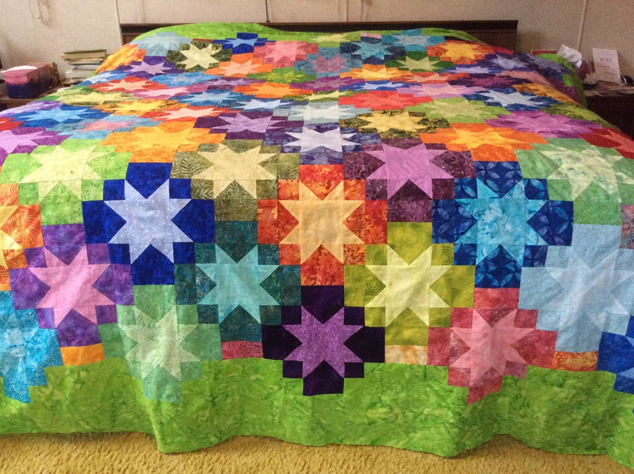

This, shown here before quilting, is my current favorite. I tend to be a traditionalist and like old patterns and traditional fabrics. This was a departure in color and style that “had” to be made and is now on our bed. I love looking at what is essentially an album of batik fabrics. It is heavier than more traditional fabrics but is great to sleep under, almost like the currently fashionable weighted blankets. Lesson learned, elaborate border quilting is less visible on batiks so you might want to consider a simpler desgn than the “feathers” I love and used. I am glad they are there.